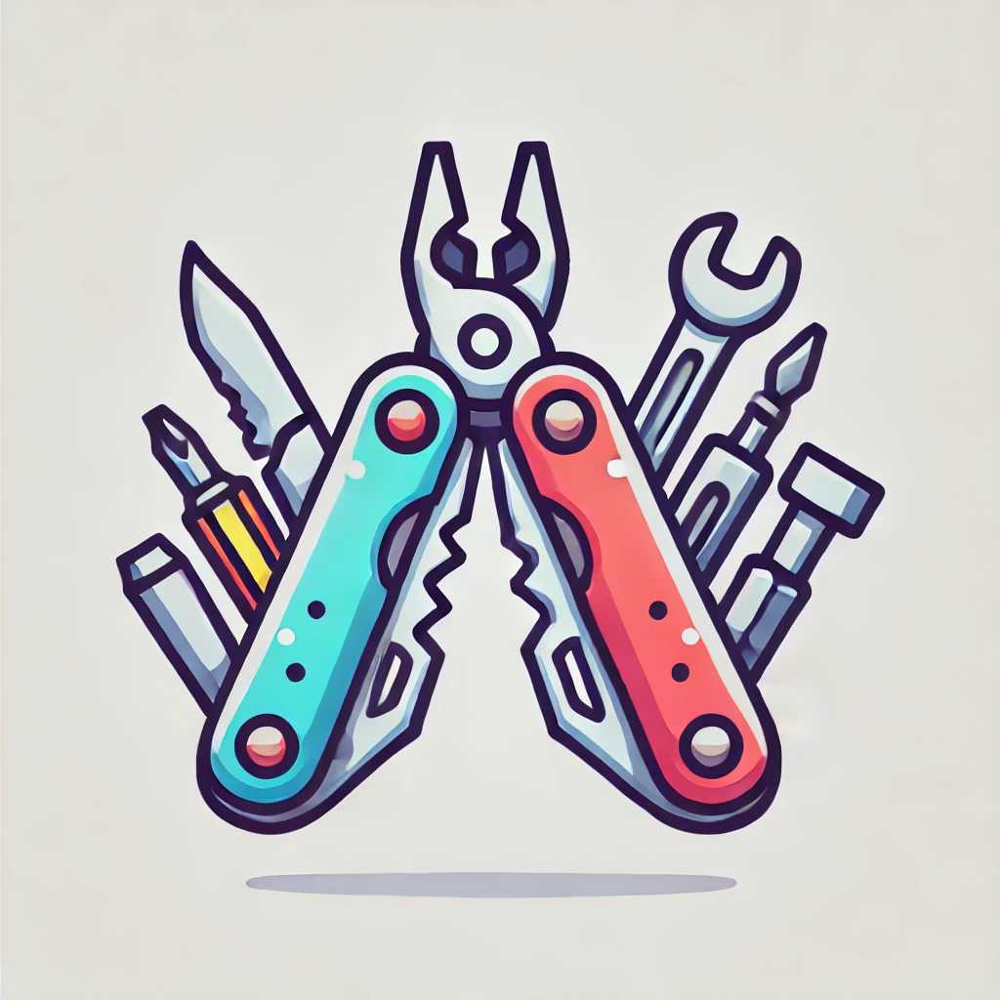

Top 15 Survival Gadgets for Outdoor Adventures
When venturing into the great outdoors, having the right survival gadgets can make a significant difference in your safety and comfort. Here are the top 15 survival gadgets that every adventurer should consider packing.
1. Multi-Tool
A multi-tool is a compact and versatile gadget that includes various tools such as pliers, knives, screwdrivers, and more. It's essential for cutting, repairing, and building in survival situations.
Key Features:
- Multiple functions
- Durable construction
- Compact design
2. Portable Water Filter
Access to clean drinking water is crucial in the wild. A portable water filter can remove harmful bacteria and parasites from water sources, making it safe to drink.
Key Features:
- Lightweight
- Easy to use
- Effective filtration
3. Fire Starter
A reliable fire starter is essential for warmth, cooking, and signaling. Options include ferrocerium rods, magnesium blocks, and waterproof matches.
Key Features:
- Weatherproof
- Long-lasting
- Easy to carry
4. Emergency Blanket
An emergency blanket can provide warmth and protection from the elements. It's lightweight and can reflect body heat to prevent hypothermia.
Key Features:
- Compact and lightweight
- Reflective material
- Waterproof and windproof
5. First Aid Kit
A well-stocked first aid kit is vital for treating injuries and illnesses. It should include bandages, antiseptics, pain relievers, and other essential medical supplies.
Key Features:
- Comprehensive contents
- Portable case
- Easy to access
6. Solar-Powered Charger
Keeping your electronic devices charged can be lifesaving in emergencies. A solar-powered charger allows you to harness solar energy to power your gadgets.
Key Features:
- Solar panels
- USB ports
- Durable design
7. Paracord Bracelet
A paracord bracelet is a stylish and functional accessory that can be unraveled into a strong rope. It's useful for building shelters, creating traps, and other survival tasks.
Key Features:
- High tensile strength
- Multifunctional
- Wearable design
8. Survival Whistle
A loud whistle can help signal for help and scare away predators. It's a simple yet effective tool for emergency communication.
Key Features:
- High decibel sound
- Lightweight
- Durable material
9. Compass
A compass is an essential navigation tool that helps you find your way in the wilderness. Pair it with a map for accurate navigation.
Key Features:
- Reliable and accurate
- Easy to read
- Durable
10. Headlamp
A headlamp provides hands-free lighting, making it easier to navigate and perform tasks in the dark. Look for one with adjustable brightness and long battery life.
Key Features:
- Adjustable light settings
- Comfortable strap
- Long battery life
11. Portable Stove
A portable stove allows you to cook meals and boil water efficiently. Choose a lightweight and compact model that uses readily available fuel.
Key Features:
- Lightweight
- Easy to use
- Efficient fuel consumption
12. Waterproof Dry Bag
A waterproof dry bag keeps your gear dry in wet conditions. It's perfect for storing clothing, electronics, and other sensitive items.
Key Features:
- Waterproof material
- Secure closure
- Various sizes
13. Folding Shovel
A folding shovel is useful for digging fire pits, creating shelters, and other tasks. It's compact and can be easily stored in your backpack.
Key Features:
- Foldable design
- Durable material
- Multifunctional
14. Emergency Radio
An emergency radio allows you to receive weather updates and emergency broadcasts. Look for models with multiple power sources, such as hand-crank and solar.
Key Features:
- Multiple power sources
- AM/FM and NOAA channels
- Compact design
15. Survival Knife
A survival knife is a versatile tool for cutting, carving, and self-defense. Choose a durable knife with a comfortable grip and a sharp blade.
Key Features:
- Strong blade
- Ergonomic handle
- Multifunctional
Conclusion
Having the right survival gadgets can significantly enhance your chances of surviving and thriving in the wild. Equip yourself with these top 15 gadgets to ensure you're prepared for any outdoor adventure. Remember to familiarize yourself with each gadget and practice using them before heading out into the wilderness.